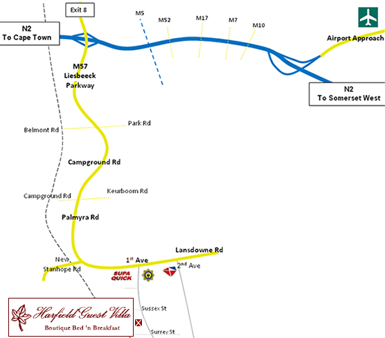

Print
Map  |
Harfield Guest Villa is situated in the heart of Harfield Village, a village rich in character and steeped in indigenous history. Harfield Guest Villa is centrally located in the southern suburbs and is a 15 minutes drive from Cape Town International Airport, 5 minutes to Kirstenbosch Gardens, Newlands Cricket and Rugby Stadiums. Harfield Guest Villa is a comfortable walk to the popular shopping centre Cavendish square and a short drive to and from Table Mountain and our famous beaches. |